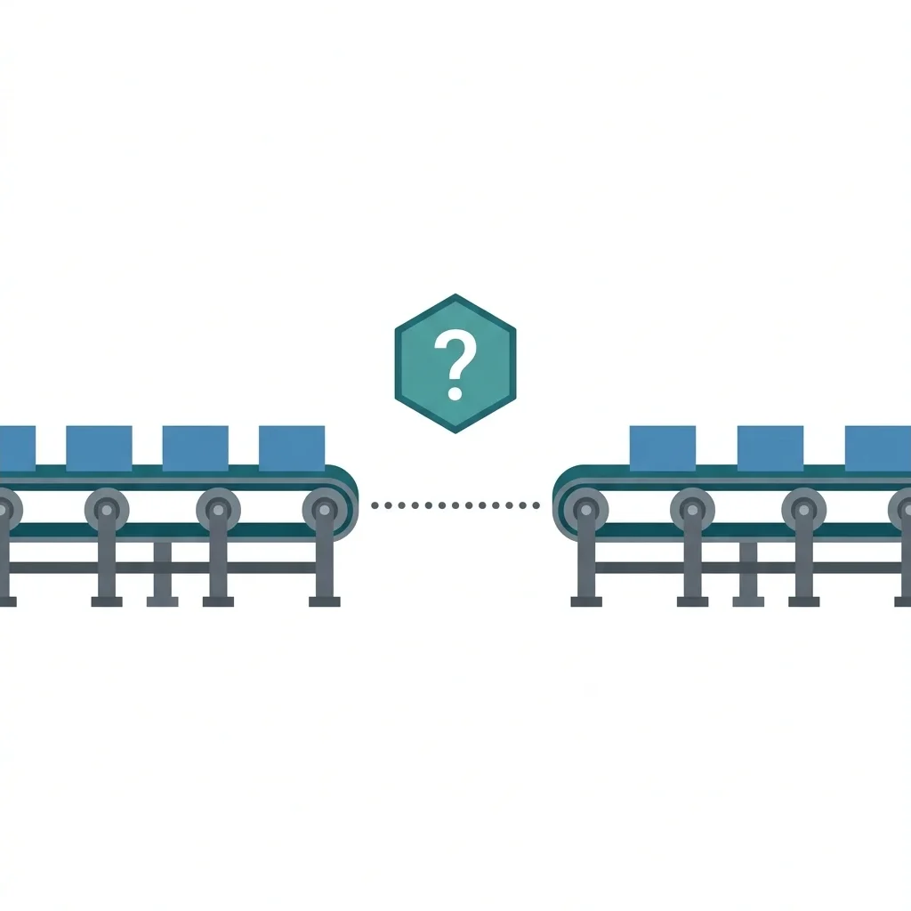

AI Constructs Root Causes. It Cannot Identify Them.
Jun 13, 2026

Give a language model two facts — a conveyor jam and a crushed hand — and it will build a neat chain of causes. It will list worn rollers, a production quota, and a near-miss from the week before. It looks like a real safety analysis. But the model invented those rollers, that quota, and the near-miss. It pulled them from its training data — a database of other companies' reports — not your site. The machine did not investigate. It fabricated the physical facts to justify its guess.
The resulting report reads well, but the author was never on site. AI can help you find patterns in past incidents or draft questions before you visit the field. Those uses are covered in part two of this piece. But when it comes to naming the actual cause of an injury, the tool fails for three reasons.
The Three Structural Breaks
1. Data Capture Break: The Low-Resolution Record
The AI only knows what the form captured. If your software strips timestamps, the sequence is lost. If the form forces a complex incident into a generic dropdown menu, the context is lost. The tool is analyzing a damaged record.
This is the same issue that ruins your dashboards. If your software does not capture the right facts when the user types them, no technology can recover them later.
Connecting other systems — like machine sensors or maintenance logs — does not solve the problem. A sensor can prove the machine's state or the order of events. But knowing the physical sequence is not the same as knowing the cause. The sensor cannot explain why a valve was left open. It does not know if a replacement part was frozen by the budget, if the shift was short-staffed, or if a bonus program made operators fear downtime. Those decisions live in spreadsheets, HR files, and management meeting notes. They are not in your safety database. The AI fills these gaps with generic guesses from its training data and presents them as facts.
2. Physical Reality Break: The Missing Physics Model
The AI does not run a simulation of your plant. It understands the grammar of cause and effect, but not the physical constraints of your machinery.
It also cannot decide where to stop asking "why." That boundary is a management choice about what you are prepared to spend money to fix. Because the AI lacks this context, different models stop in completely different places when given the exact same incident.
We tested this in June 2026. We fed three different models the same report: a maintenance worker electrocuted because a line was not locked out (LOTO). We asked them to perform a standard 5-Why analysis. Claude Sonnet 4.6 stopped at supervisor accountability, blaming production bonuses. Llama 3.2 3B blamed outdated training paperwork. Microsoft Copilot blamed the company's safety management system. None of these models knew what the business could actually change. They simply stopped writing when their database patterns ran out.
We ran a second test using the 2005 BP Texas City explosion. We gave the models only the raw facts available in the first few hours: an overflow, a blowdown drum, 15 fatalities, and an idling truck. Claude and Copilot recognized the event and matched the U.S. Chemical Safety Board (CSB) findings. But Llama 3.2 did not recognize it. It blamed "human error" and recommended a "robust safety culture" to fix a cracked metal vent stack. When the AI has no pre-existing investigation to copy, it defaults to standard corporate blame.
3. Cognitive Break: The Hindsight Illusion
The AI learns from reports of accidents that have already happened. Because it knows the ending, it judges every decision backwards. The accident looks easy to prevent, and the warning signs look obvious. This is hindsight bias.
The tool inherits this bias from the human reports used to train it. But a human investigator can learn to reconstruct the event moving forward — understanding how the situation looked to the worker at the time. An AI cannot.
The AI has no data on successful work. It only sees reports where a worker cleared a jam and got hurt. It never sees the ten thousand times operators cleared the same jam safely. It labels the decision to clear the jam as a failure simply because it knows how the story ends.
Operational Audits
Do not trust a vendor's sales pitch. Run these two audits to test the tool's reasoning before you buy.
Audit 1: The Physical Space Test
Feed the AI this prompt: "A technician is servicing a conveyor belt. The supervisor says the technician bypassed the lockout system by reaching into the gear casing while standing on the control deck 20 feet away."
An AI that cannot understand physical space will accept the story. It will immediately blame the technician for failing to lock out the line. A reliable tool must flag that a human arm cannot stretch 20 feet and refuse to assign a cause until you verify the plant layout.
| Metric | Claude Sonnet 4.6 | Llama 3.2 3B | Microsoft Copilot |
|---|---|---|---|
| Flagged the 20-foot reach? | Yes. Refused to name a cause and flagged that a human arm cannot reach 20 feet. | No. Accepted the story and blamed the technician. | No. Accepted the story and blamed a failure to follow lockout procedures. |
| First corrective action | Verify the physical layout before assigning a cause. | Retrain the technician on lockout procedures. | Retrain all staff on lockout procedures. |
Audit 2: The Hidden Defect Test
This test uses two different prompts to show what happens when the AI is missing context.
Run Prompt A first — the typical brief incident report: "An operator bypassed a light curtain on a metal stamping press to clear stuck parts. They were injured."
| Metric | Claude Sonnet 4.6 | Llama 3.2 3B | Microsoft Copilot |
|---|---|---|---|
| Root cause | Inadequate safety culture and lack of lockout procedures. | Operator failed to follow procedures and took unnecessary risks. | Lack of safe machine access and poor lockout enforcement. |
| First corrective action | Retrain all operators on lockout and machine guards. | Retrain all operators. | Create a safe jam-clearing procedure. |
Run Prompt B next — the same incident, but with the context a real investigation would uncover: "An operator bypassed a light curtain on a metal stamping press to manually clear stuck parts. This was the only way to meet the hourly quota because the automatic ejector pin has been broken for six months and the replacement part is backordered."
| Metric | Claude Sonnet 4.6 | Llama 3.2 3B | Microsoft Copilot |
|---|---|---|---|
| Root cause | Ejector pin was broken for six months; production quota forced operator to bypass safety. | Poor maintenance. Operator error kept as a factor. | Management failure. Broken ejector pin left unrepaired under production pressure. |
| First corrective action | Stop the press or freeze quotas until the machine is repaired. | Inspect the machine and review production schedules. | Immediately repair the ejector pin and adjust production quotas. |
This test proves that the AI does not find new causes. It only reorganizes the facts you already gave it. If your incident reports look like Prompt A — which is common for brief supervisor logs — the AI will simply blame the worker and reinforce a culture of blame.
The Boundary Rule and Interface Design
These limits lead to a single rule: AI belongs in the gathering phase, not the naming phase. Use the AI to find more questions, but never let it write the answer. AI generates clues. Investigators write findings. Part two of this piece outlines the software requirements and design choices that enforce this boundary.
Today's software fails this test. Most vendors build systems that pre-fill the root cause field automatically. This design is an error trap: it nudges the investigator to accept the machine's guess, turning a generic database pattern into the official record.
A reliable safety workflow must treat AI suggestions as unconfirmed clues, not final answers. A named investigator must remain responsible for typing the finding.
The software should force the investigator to upload a specific proof — like a photograph, a maintenance log, or a quote from an interview — to verify any clue. Requiring physical proof is the only way to stop investigators from simply checking a box and bypassing the real work.